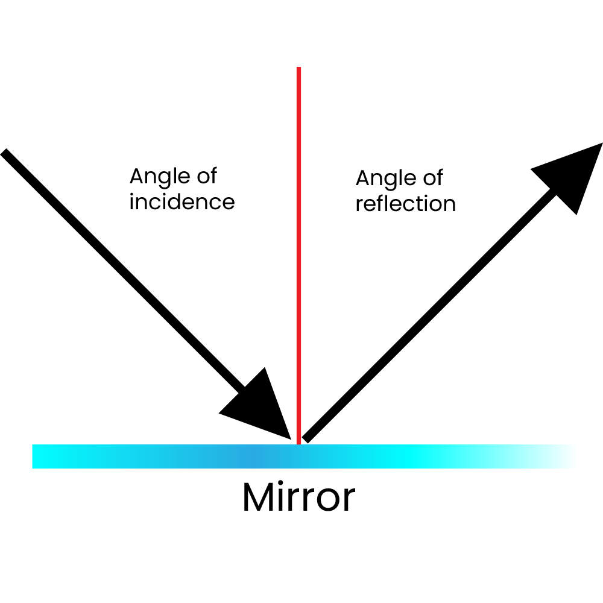
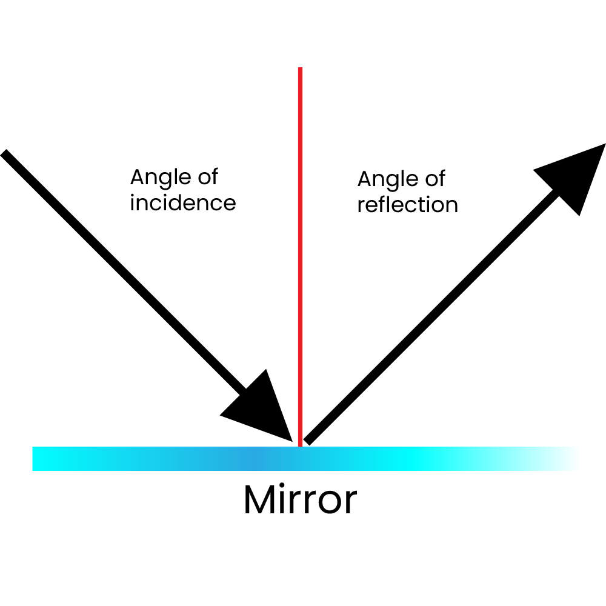

Make a photo of a:
Reflection
 

Reflection is when light bounces off an object. If the surface is smooth and shiny, like a mirror, water or metal, the light will reflect at the same angle as it hit the surface. This is called specular reflection. Light reflects from a smooth surface at the same angle as it hits the surface.